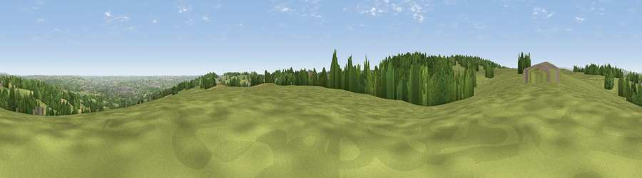

Viewpoint near Wadshelf
#18110 in England · top 21% of its area beats it · near WadshelfThe view, rendered

A 360° render of this exact spot computed from the terrain model, tree cover and land cover — summer colours, afternoon light, calibrated against photographs of famous viewpoints. Real trees, hedges and buildings will differ in detail.
The panorama
Grey silhouette: terrain skyline in each direction (720 bearings, Earth curvature and refraction included). Dashed green: skyline with trees (+15 m) and buildings (+8 m) as obstacles. Blue strip: how far the ground is visible on each bearing.
Where the view opens
Wedge length = distance to the farthest visible ground on that bearing (vegetation-aware). Rings at 10, 25 and 50 km.
What fills the view
65% grassland · 26% woodland · 6% cropland · 4% built-up
Angular shares of the visible panorama (visual magnitude), not map area. Landscape diversity 0.40 (0–1 Shannon).
Key numbers
More beautiful places nearby
The staircase of upgrades: each row has a higher view potential than everything closer. Driving times are estimates from straight-line distance, calibrated against real road routing — check an actual route before setting out.
| Place | Direction | Drive | Score |
|---|---|---|---|
| Viewpoint near Wadshelf | N · 3 km | ~7 min | 59.9 |
| Viewpoint near Beeley | WSW · 4 km | ~9 min | 65.3 |
| Viewpoint near Tinkersley | SW · 5 km | ~11 min | 65.6 |
| Viewpoint near Alton | SE · 7 km | ~14 min | 67.0 |
| Viewpoint near Alton | SE · 7 km | ~14 min | 67.7 |
| Viewpoint near Brackenfield | SSE · 10 km | ~20 min | 68.3 |
| Viewpoint near Holmesfield | NNW · 10 km | ~20 min | 69.4 |
| High Rake | WNW · 11 km | ~21 min | 71.1 |
53.21512, -1.53386 · source: screening · position refined by local search. Computed location — check access rights before visiting.